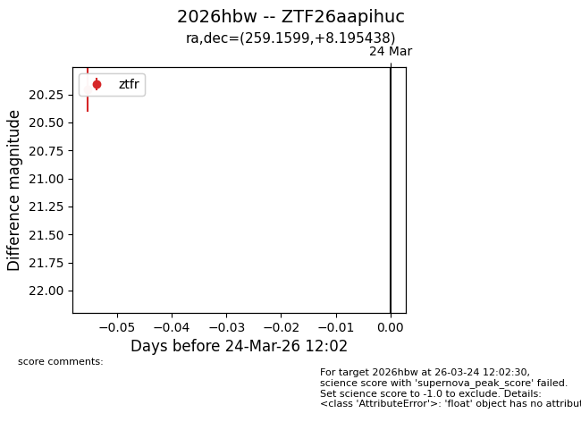
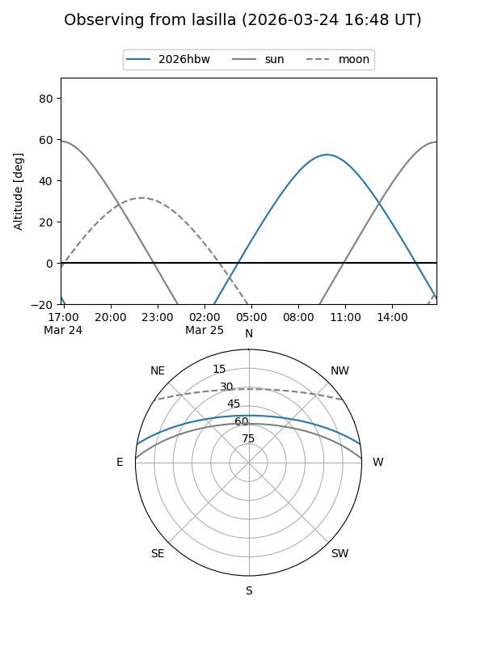
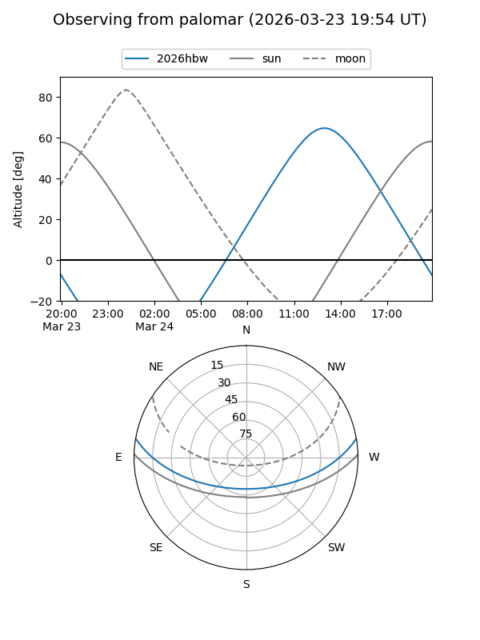

2026hbw
Target 2026hbw at 2026-03-24 12:05
Aliases and brokers:
FINK: link
Lasair: link
ALeRCE: link
TNS: link
YSE: link
alt names
ZTF26aapihuc (ztf,fink_ztf)
2026hbw (tns,yse)
Coordinates:
equatorial (ra, dec) = 259.1599,+8.19544
equatorial (HMS+DMS) = 17:16:38.38,+08:11:43.58
galactic (l, b) = (29.4882,+24.77589)
Flags:
Photometry:
last ztfr=20.21
1 ztfr detections
Lightcurve

Visibility


Additional plots